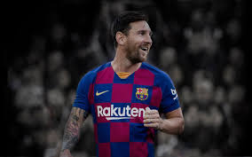

VINI JR
Vinícius José Paixão de Oliveira Júnior, mais conhecido como Vinícius Júnior (São Gonçalo, 12 de julho de 2000), é um futebolista brasileiro que atua como ponta-esquerda. Atualmente joga pelo Real Madrid.
Em junho de 2017, Vinicius apareceu na 39ª posição de uma lista do jornal inglês "The Telegraph" com os melhores jogadores Sub-21 do mundo. Ele foi o único sul-americano a aparecer nessa lista.Em 2017, Vinicius Jr. entrou para a história do futebol mundial. Com apenas 16 anos, ele foi vendido pelo Flamengo ao Real Madrid por 45 milhões de euros. Este valor representou, à época, a 2ª maior venda da história do futebol brasileiro atrás apenas da venda de Neymar e ainda o maior valor já pago por um futebolista com menos de 19 anos de idade.
JOÃO FELIX
João Félix Sequeira, mais conhecido apenas como João Félix (Viseu, 10 de novembro de 1999), é um futebolista português que atua como atacante. Atualmente joga pelo Atlético de Madrid e pela Seleção Portuguesa.
Carreira
Nascido em Viseu, João Félix começou a jogar no clube "Os Pestinhas", e em seguida entrou para as categorias de base do Porto, onde permaneceu durante sete anos. Após ter estado no Padroense, foi para as categorias de base do Benfica.
Atlético de Madrid
Já no dia de 3 julho de 2019, assinou com o Atlético de Madrid por 126 milhões de euros, se tornando o quarto jogador mais caro da história.

MBAPPE
Kylian Mbappé Lottin mais conhecido como Kylian Mbappé ou simplesmente Mbappé (Bondy, 20 de dezembro de 1998) é um futebolista francês que atua como ponta. Atualmente defende o Paris Saint-Germain.
O atacante, que nasceu no subúrbio de Paris, é filho de imigrantes. Sua mãe, é da Argélia, e o pai, de Camarões. Sua história com o futebol começou cedo, aos seis anos, e seu sucesso é fruto de um trabalho em família.
Até os 13 anos, Mabppé jogou nas categorias de base do AS Bondy, um time de sua cidade-natal, que era treinado por seu pai.
Até o início do ano passado, Mbappé dependia da mãe para levá-lo aos treinos e nem sonhava em se tornar a revelação da copa na Rússia.
LIONEL MESSI
Lionel Andrés Messi Cuccittini, mais conhecido como Lionel Messi (Rosário, 24 de junho de 1987) é um futebolista argentino que atua como atacante. Atualmente joga no Barcelona e na Argentina, e é capitão tanto no clube como na Seleção.
Frequentemente considerado o melhor jogador do mundo e amplamente considerado como um dos maiores jogadores de todos os tempos, Messi possui seis prêmios Ballon d'Or, quatro dos quais ele ganhou consecutivamente e um recorde de seis Chuteiras de Ouro. Ele passou toda a sua carreira profissional no Barcelona, onde é recordista de troféus, conquistando 34 troféus, incluindo dez títulos da La Liga, quatro títulos da Liga dos Campeões e seis Copas do Rei. Um goleador prolífico e um craque criativo, Messi detém o recorde de mais gols em La Liga (419), mais gols em uma temporada por um Campeonato Europeu (50), mais hat-tricks na Liga dos Campeões (8) e mais assistências em La Liga (169) e Copa América (12). Ele marcou 682 gols na carreira pelo clube e Seleção.
Na opinião da grande maioria dos especialistas do esporte, sua qualidade técnica, jogadas, velocidade, habilidade na perna esquerda, trabalho de equipe e extraordinária vocação para o gol, o tornam um dos melhores futebolistas de todos os tempos e do mundo atualmente. Os especialistas desde já o comparam aos grandes nomes da história do futebol, alguns o colocando até como o melhor jogador de todos os tempos, como disseram Ronaldinho, Rooney, Jordi Alba, Xavi, Iniesta, Hazard, Arthur Melo, Thiago Silva, os técnicos Arsène Wenger e Pep Guardiola, e muitos outros
COUTINHO
Thomas Philippe Coutinho Correia nasceu em 12 de junho de 1992, na cidade do Rio de Janeiro. O jogador é destro e possui 1,71 metros de altura. O filho mais novo de Zé Carlos e dona Esmeraldina era chamado de Philipinho na infância. O início de carreira Philippe Coutinho começou a sua carreira muito cedo. Com apenas 6 anos, seu pai o matriculou na escolinha de futsal do Clube dos Sargentos do Rio de Janeiro. Com 7 anos ele realizou testes no time da Mangueira, disputando a Liga de Futsal do Estado do Rio de Janeiro. Ele era o mais novo do time, da então categoria Fraldinha. Mesmo assim, foi o artilheiro daquela competição. No mesmo ano, ele vai para o Vasco, ainda atuando na escolinha de futsal. Até que no ano de 2003, Philippe troca as quadras pelos gramados e já em sua primeira competição, se sagra artilheiro. Ele venceu praticamente todos os campeonatos disputados nas categorias sub-12, sub-13 e sub-14. Em 2008 vence a 1ª Copa do Brasil sub-17. Pela seleção brasileira foi convocado nas diversas categorias de base.